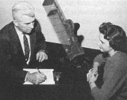
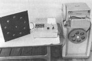
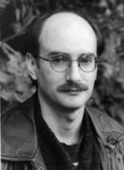
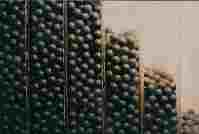
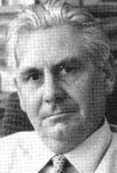
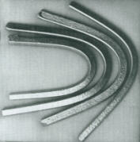
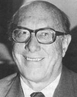
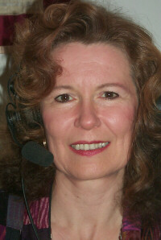
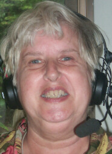

<!doctype html public "-//w3c//dtd html 4.0 transitional//en">
<html>
<head><meta name="viewport" content="height=device-height,width=device-width">
   <meta http-equiv="Content-Type" content="text/html; charset=iso-8859-1">
   <meta name="Generator" content="Microsoft Word 97">
   <meta name="GENERATOR" content="Mozilla/4.73 [en] (WinNT; I) [Netscape]">
   <meta name="Author" content="Jeffrey Mishlove">
   <title>The Roots of Consciousness: Science, Psychokinesis</title>

<!-- google-analytics.com  START  (aync)-->
<script type="text/javascript">

  var _gaq = _gaq || [];
  _gaq.push(['_setAccount', 'UA-15825841-1']);
  _gaq.push(['_trackPageview']);

  (function() {
    var ga = document.createElement('script'); ga.type = 'text/javascript'; ga.async = true;
    ga.src = ('https:' == document.location.protocol ? 'https://ssl' : 'http://www') + '.google-analytics.com/ga.js';
    var s = document.getElementsByTagName('script')[0]; s.parentNode.insertBefore(ga, s);
  })();

</script>
<!-- google-analytics.com  END  -->

<!-- Histats.com  START  (aync)-->
<script type="text/javascript">var _Hasync= _Hasync|| [];
_Hasync.push(['Histats.start', '1,1087503,4,0,150,30,00000000']);
_Hasync.push(['Histats.fasi', '1']);
_Hasync.push(['Histats.track_hits', '']);
(function() {
    var hs = document.createElement('script'); hs.type = 'text/javascript'; hs.async = true;
    hs.src = ('http://s10.histats.com/js15_as.js');
    (document.getElementsByTagName('head')[0] || document.getElementsByTagName('body')[0]).appendChild(hs);
  })();</script>
<noscript><a href="http://www.histats.com" target="_blank"></a></noscript>
<!-- Histats.com  END  -->

</head>
<body>
&nbsp;
<center><table BORDER=0 COLS=1 WIDTH="600" >
<tr>
<td>
<center><font face="Arial,Helvetica"><font size=+2>Psychokinesis</font></font></center>

<p><b><font face="Arial,Helvetica">Rhine's Early Studies</font></b>
<center>
<p>
<br><b><font face="Arial,Helvetica"><font size=-1>J. B. Rhine conducting
a PK experiment using dice in a machanical dice tumbler.&nbsp;</font></font></b>
<br><font face="Arial,Helvetica"><font size=-2>(Courtesy Foundation for
Research on the Nature of Man)</font></font></center>

<p><font face="Arial,Helvetica">In 1934, several months prior to publishing
his famous paper on Extra-Sensory Perception, Dr. J. B. Rhine received
a visit from a young gambler. After comparing notes on conditions for success
in psychic testing, he remarked that similar conditions seemed to favor
his luck in gambling. Furthermore, he claimed that he himself was sometimes
able to exercise a mind over matter effect on dice-throwing games. While
belief in such an influence on dice was both common and ancient, until
then it had not been deemed a serious problem for scientific study. Rhine
discovered that preliminary experimentation would be quick, easy, and inexpensive.
The results proved encouraging enough to warrant further research.</font>
<p><font face="Arial,Helvetica">Experiments continued during the next decade
using protocols that systematically eliminated bias from unbalanced dice.
The dice were placed in special cups, so subjects could not use special
tricks to throw them. Still later, the dice were placed in electrically-driven
rotating cages and were also photographed automatically in order to eliminate
experimenter error. In general, the tests entailed asking the subjects
to will the fall of the dice with selected target faces showing. Numerous
throws were made in succession for each target before another target was
chosen.</font>
<p><font face="Arial,Helvetica">By the end of 1941, a total of 651,216
experimental die throws had been conducted. The combined results of these
experiments pointed to a phenomenon with 10115 to 1 odds against chance
occurrence. Nevertheless, Rhine hesitated to publish his results. The scientific
world was still reacting emotionally to his announced proof of ESP, and
he felt no need then to raise eyebrows by announcing another unorthodox
discovery.</font>
<p><font face="Arial,Helvetica">In 1942, with most of the staff at the
Parapsychology Laboratory called away to war, continued experimentation
in PK proved difficult. At this time, Rhine went over the records of earlier
experiments so conducted that an analysis of position effects could be
made, similar to the decline of high ESP scoring toward the end of experimental
sessions, detected a few months earlier. If the above chance results had
been caused by probability, artifacts, or illegitimate means, one would
expect the distribution of hits would be&amp;#0;onsistent throughout the
experiment and would not decline.</font>
<p><font face="Arial,Helvetica">The results of this survey indicated there
were more hits near the beginning of each run of 24 die throws. There were
also more hits during the earlier runs of each experimental session which
would typically last for ten runs. These results were not expected or even
considered by the experimenters and subjects at the time of the experiments.
The odds against such distribution occurring by chance were about a hundred
million to one. This evidence of a presumably psychological effect, similar
to that noted with ESP, made a case for psychokinesis strong enough to
warrant publication. The first of the papers appeared in the <i>Journal
of Parapsychology</i> in 1943. Many others followed.</font>
<p><font face="Arial,Helvetica">In 1946 a study was published that pitted
the psychokinetic skills of veteran gamblers against those of divinity
students. In this contest atmosphere, both groups scored well above chance
expectations.</font>
<br>&nbsp;
<p><b><font face="Arial,Helvetica">PK With Random Number Generators (RNGs)</font></b>
<center>
<p>
<br><b><font face="Arial,Helvetica"><font size=-1>PK test equipment</font></font></b>
<br><font face="Arial,Helvetica"><font size=-2>(Courtesy Helmut Schmidt)</font></font></center>

<p><font face="Arial,Helvetica">The random number generator experiments
pioneered by Helmut Schmidt, previously described as tests of precognition,
have also been used extensively as tests for psychokinesis. As mentioned
earlier, it seems theoretically impossible to clearly distinguish between
psychokinesis and precognition in quantitative research. Generally, the
tests for psychokinesis are those in which the experimenter instructs the
subject to will or intend that a particular target be selected by the RNG.
This reduces the possibility that the subject could be using precognition,
but does not eliminate the possibility of experimenter precognition. The
hypothesis of intuitive data sorting suggests that the subject might use
precognition to start the RNG at the exact time required to match the preselected
PK target sequence.</font>
<p><font face="Arial,Helvetica">One interesting version of the Schmidt
RNG studies involved the cooperation of Robert Morris and Luther Rudolph
at Syracuse University, with the experimental protocol published prior
to the beginning of the experiment., These studies, which used prerecorded
targets, were reviewed by skeptic James Alcock in a report for the National
Research Council's study on methods for enhancing human performance. Alcock,
who had access to the pertinent raw data, admitted that this study was
much better executed than other studies by Schmidt and merited further
replication attempts.</font>
<p><font face="Arial,Helvetica">An elegant and sophisticated research program
involving Random Event Generators has been underway for a number of years
at Princeton University under the aegis of Dean Emeritus of Engineering,
Robert Jahn, and management of psychologist Brenda Dunne. Other staff members
include psychologists Roger Nelson and Angela Thompson, electrical engineer
John Bradish, and physicist York Dobyns.&nbsp;</font>
<p><font face="Arial,Helvetica">In the formal test series, generation rates
of either 100 or 1000 per second are used, and each trial comprises 200
binary samples. The count data are permanently recorded on a strip printer
as well as being entered on line into computer memory. The subject receives
immediate feedback via electronic displays which show the number of trials,
the number of hits in the last trial, and the average number of hits since
some predetermined starting point. The REG and the on-line IBM PC/AT computer
independently calculate the mean of each trial and the standard deviation
for every block of fifty trials.</font>
<center>
<p>
<br><b><font face="Arial,Helvetica"><font size=-1>REG Testing at the Princeton
Engineering Anomalies Research Program</font></font></b></center>

<p><font face="Arial,Helvetica">The equipment can be run in one of two
modes, either manual or automatic. In the former case, the machine will
generate a trial only when a switch is pressed; while in the automatic
mode, once started, the machine will automatically initiate a block of
fifty trials.</font>
<p><font face="Arial,Helvetica">There are two types of procedure, either
"volitional mode," in which case the subject chooses whether to aim for
a high score (PK+) or a low score (PK-) in a given run, or "instructed
mode" where some kind of random process determines which way the subject
is to aim. There are also baseline runs interspersed ("in some reasonable
fashion," the nature of which is unspecified) with the PK runs; in this
case the subject is to exert no influence, so that these will serve as
a randomization check. The choice of volitional/instructed mode and automatic/manual
mode are "normally left to the preference of the operators (subjects),
but they are encouraged to undertake additional series employing the other
modes for comparison."</font>
<p><font face="Arial,Helvetica">The formal data base consists of well over
750,000 trials (or 150,000,000 binary digits) carried out on two different
machines by thirty-three different subjects over a period of nearly ten
years. Typically, a session had three types of trials: high aim, low aim,
and a control series. Pooled, overall results of the high- and low-aim
trials are clear: significantly higher scores for high aim; significantly
low scores for low aim. The outcome of the control trials was illuminating.
Here the subjects were told not to try to influence the REG. Presumably,
they hoped their data would be "normal." In fact, although the mean score
was almost identical with the theoretical mean, the distribution was unique:
a statistically significant surplus of scores at the precise theoretical
mean. When control, high-aim, and low-aim series are pooled, the distribution
is what would be expected by chance. This result, which may be the consequence
of the subjects' intentions to "achieve a baseline" in the control condition,
shows the difficulty of conducting psi experiments with a true control
group.&nbsp;</font>
<p><font face="Arial,Helvetica">Interestingly, both earlier and later calibration
trials nicely conformed to a normal statistical curve, showing that the
equipment was probably operating properly. If psi is operating in the ostensible
control tests, then the critics' demands for additional control tests seems
naive.</font>
<p><font face="Arial,Helvetica">Ironically, comparable results were obtained
using a pseudo-random noise source (i.e., based on both computer algorithms
and prerecorded targets). This finding makes it difficult to interpret
the Princeton data in terms of a conventional psychokinesis hypothesis.
How can one psychokinetically influence targets which have already been
determined? For this reason, the Princeton team does not attempt to describe
their research program as a test of PK, but simply refers to the program
as a study of anomalous man-machine interactions.</font>
<p><font face="Arial,Helvetica">The Princeton team has gone to great lengths
to try to ensure that their equipment is unbiased. Internal circuits are
continually monitored with regard to internal temperature, input voltage,
etc. Successive switching of the relationship between the sign of the noise
and the sign of the output pulse on a trial-to-trial basis was done to
provide a further safeguard against machine bias. Results were automatically
recorded and analyzed. Extensive tests of the machine's output and its
individual components were also carried out at times separate from the
test sessions. The provision of baseline trials interspersed with test
trials provided a randomization check which overcame some of the weaknesses
of Schmidt's procedure.</font>
<p><font face="Arial,Helvetica">Psi researcher John Palmer has drawn attention
to the fact that there is no documentation regarding measures to prevent
data tampering by subjects. This is of concern since the subject was left
alone in the room during the formal sessions along with the REG.&nbsp;</font>
<p><font face="Arial,Helvetica">In evaluating these studies, skeptic James
Alcock claimed that only one subject (Operator 10) accounted for virtually
all the significance departures from chance in the Princeton studies. Noting
that details regarding precautions against subject cheating were not specified,
Alcock stated:</font>
<blockquote><font face="Arial,Helvetica">I am not trying to suggest that
this subject cheated; I am only pointing out that it would appear that
such a possibility is not ruled out. Had the subject been monitored at
all times, such a worry could have been avoided or at least reduced.&nbsp;</font></blockquote>
<font face="Arial,Helvetica">The Princeton team has chosen a policy of
keeping the identity of all experimental subjects anonymous -- among other
reasons, in order to eliminate motivation for subjects to cheat. However,
the fact that Subject 10 contributed considerably more to the database
than any other subject, suggests that this individual was either a member
of the experimental team or someone who had become a close friend of the
experimenters. As such, Subject 10 might well have had access to information
which would make it possible to tamper with the data recording system.&nbsp;</font>
<p><font face="Arial,Helvetica">In response to the criticisms of Palmer
and Alcock, the Princeton researchers have prepared a detailed analysis
of the equipment, calibration procedures and various precautions against
data-tampering. According to the researchers, the automated and redundant
on-line recording of data preclude data tampering -- as does the protocol
requirement that the printer record be on one continuous, unbroken paper
strip. It would appear that all necessary precautions have been taken,
short of submitting subjects to constant visual observation. The subjects
are submitted to intermittant visual observation which the researchers
believe is sufficient to control against tampering with the equipment,
given their particular setup.</font>
<p><font face="Arial,Helvetica">In further response to Alcock's critique,
the Princeton team conducted further analyses of the data which show that
the anomalous RNG effects were contributed by most of the subjects, and
were not dependent upon the scores of Subject 10. Several other subjects,
who participated in fewer experimental trials, actually had scores with
greater chance deviations. By analyzing the data from only the first series
of 7,500 trials (1,500,000 binary digits) from each subject, it was possible
to level the influence that Subject 10 exerted on the database. In this
analysis, with each subject carrying an equal weight, the results were
significantly beyond chance. Another analysis was conducted which eliminated
all of the data from Subject 10. This, too, was statistically significant.</font>
<p><font face="Arial,Helvetica">A comprehensive meta-analytic review of
the RNG research literature encompassing all known RNG studies between
1959 and 1987 has been reported by Radin and Nelson, comprising over 800
experimental and control studies conducted by a total of 68 different investigators.
The probability 597 experimental series was p &lt; 10-35, whereas 235 control
series yielded an overall score well within the range of chance fluctuation.
In order to account for the observed experimental results on the basis
of selective reporting (assuming no other methodological flaws), it would
require "file drawers" full of more than 50,000 unreported studies averaging
chance results.</font>
<p><font face="Arial,Helvetica">Some people seem to produce data in random
number generator (RNG) experiments that display idiosyncratic patterning
that appears to be consistent from one run to the next. To explore the
idea of person-unique signatures, Dean Radin, working at Princeton University,
used a powerful, new "neural network" computational technique that is proving
to be adept at discovering weak patterns in noisy data.&nbsp;</font>
<center>
<p>
<br><b><font face="Arial,Helvetica"><font size=-1>Dean Radin</font></font></b></center>

<p><font face="Arial,Helvetica">Neural networks are a form of parallel
processing based upon research about how the brain encodes and processes
information. The power of these networks rests upon the discovery that
when numerous elementary processing units are richly interconnected under
the right conditions, they can automatically learn to associate arbitrarily
complex inputs with arbitrarily complex outputs. Information processing
in these networks takes place in the interactions among large numbers of
artificial neurons. Learning takes place by changing the interconnection
strengths between neurons.</font>
<p><font face="Arial,Helvetica">The study involved training a network to
associate data with given individuals, then observing whether the trained
network could successfully identify these people based upon new data. Two
sub-datasets were required for each person: One was used to train the network
and the other was used to see whether the trained network could transfer
its knowledge to new data. Thus, each series of 50 runs was split in half,
using the first half as the training set and the second half as the transfer
set. Results showed that these networks were able to learn to associate
data with 32 different individuals, then, in statistical terms, successfully
transfer that knowledge to new data.&nbsp;</font>
<br>&nbsp;
<p><b><font face="Arial,Helvetica">PK Placement Studies</font></b>
<p><font face="Arial,Helvetica">A number of researchers have conducted
studies designed to determine whether naked human intention could affect
the movement of moving objects. The most recent version of this approach
is the database of studies using a random mechanical cascade at Princeton
University's Engineering Anomalies Research program. The experimental apparatus
allows 9000 polystyrene balls to drop through a matrix of 330 pegs, scattering
into 19 collecting bins. As the balls enter the bins, exact counts are
accumulated photoelectrically, displayed as feedback for the operator and
recorded by a computer. Subjects are asked to concentrate on shifting the
mean of the developing distribution of balls to the right or left, relative
to a concurrently developing baseline distribution. Over three thousand
experimental runs have been conducted with twenty-five individuals. The
results are significantly beyond chance expectation.</font>
<center>
<p></center>

<p><font face="Arial,Helvetica">The Princeton University researchers note
that virtually all of the statistically significant results have come from
a deviation of the balls to the left of the baseline. This, they claim,
cannot be attributed to any known physical assymetry in the system.</font>
<br>&nbsp;
<p><b><font face="Arial,Helvetica">Chinese Reports of Psychokinesis Associated
with ESP</font></b>
<p><font face="Arial,Helvetica">Reports of psi research in China claim
that certain subjects showed consistent success in ESP tests.,, A report
from the Chinese Academy of Sciences states that if the ESP response was
incorrect there was no change at the target; but that, in over 700 trials
when the ESP response was correct, there was always an accompanying PK
effect at the target location. These effects included clouding of X-ray
or photographic film; or pronounced changes in the records of photoelectric
tubes, thermoluminescence docimeters, or biological detectors. It should
be noted, however, that the quality and reliability of reports of Chinese
research is very inconsistent. At least one set of knowledgable observers
believes that some reported results resulted from slight-of-hand.</font>
<p><font face="Arial,Helvetica">Scott Hubbard, Edwin May and Harold Puthoff
at SRI International in Menlo Park, California, searched for such changes
using a detector that the Chinese had found most sensitive -- a photomultiplier
tube. ESP targets were slides of scenes from the National Geographic. There
were four subjects with six sessions each. The pooled sessions showed significant
ESP success. The researchers then correlated ESP scores with four measures
of photomultiplier output: low-amplitude increase and decrease and high-amplitude
increase and decrease in number of pulses. One correlation was significant:
the correlation with increase in the number of high-amplitude pulses, as
the Chinese had reported.</font>
<br>&nbsp;
<p><b><font face="Arial,Helvetica">PK Metal-Bending</font></b>
<p><font face="Arial,Helvetica">A renewed interest has recently developed
in large-scale (macro) PK effects, particularly metal-bending. The most
extensive research on metal-bending has been conducted by physicist John
Hasted at the University of London's Birkbeck College.</font>
<center>
<p>
<br><b><font face="Arial,Helvetica"><font size=-1>John Hasted</font></font></b></center>

<p><font face="Arial,Helvetica">His subjects were mostly adolescents who
had developed an interest in metal-bending upon exposure to the public
performances of Uri Geller. They were asked to bend or deform latchkeys
or bars of aluminum alloy without touching them. The specimens were attached
to resistive strain guages or (in later work) piezoelectric sensors. Signals
from these devices were then amplified and registered on chart recorders.</font>
<p><font face="Arial,Helvetica">Actual bending was observed in only a minority
of sessions, however anomalous signals frequently appeared on the chart
records -- from sensors separated up to several feet from each other. This
led Hasted to hypothesize an unknown form of conduction of electrical charge
from the subjects' bodies through the atmosphere to the sensors.</font>
<p><font face="Arial,Helvetica">Hasted claimed that the subjects had no
opportunity to interact directly with the chart recorder. Furthermore,
he employed dummy loads along with electrical shielding of the test channels
to minimize global electrical artifacts.</font>
<p><font face="Arial,Helvetica">Psi researchers have been rather reluctant
to accept Hasted's findings. In part, this is because macro-pk effects
remain very controversial. In part, as enumerated by psi researcher John
Palmer, it is because Hasted's research procedures would benefit from additional
refinements:</font>
<p><font face="Arial,Helvetica">Even if one grants the paranormal origins
of the signals, Hasted's methodology makes it difficult to draw valid conclusions
about their nature, including whether or not they truly represent strain.
Use of an inadequately fast chart recorder, failure to adopt proper principles
of experimental design, and failure to use statistical analyses are the
most serious problems. In particular, it is impossible to distinguish basic
physical characteristics of the phenomena from those correlated with preferences,
attitudes, etc., of the subject or experimenter.</font>
<p><font face="Arial,Helvetica">In general, "non-touching" is considered
an essential prerequisite control for a variety of possible conventional
influences in PK metal-bending research. However, some studies were conducted
which allowed touching of the target specimens and, yet, still merit some
scientific consideration.</font>
<p><font face="Arial,Helvetica">One test used by Hasted employed a brittle
alloy bar that supposedly could not be bent to a particular angle of deformation
in less than a certain known time.&nbsp;</font>
<center>
<p>
<br><b><font face="Arial,Helvetica"><font size=-1>Brittle alloy bars bent
in Hasted's experiment</font></font></b></center>

<p><font face="Arial,Helvetica">When excessive force was applied it simply
broke. The only way to bend it is to apply a small force slowly over time,
which produces bend by a process known as creep. Hasted has reported bending
of such alloys in well under the minimum time thought to be possible using
a creep process.</font>
<p><font face="Arial,Helvetica">Charles Crussard and J. Bouvaist, two French
metallurgists whose research was funded by a metals company, took the following
experimental measures in PK studies with a magical performer, Jean-Paul
Girard:</font>
<blockquote><font face="Arial,Helvetica">(1) All dimensions of metal strips
or rods were measured before and after bending; (2) The microhardness of
the metal was measured at several points before and after bending; (3)
Residual strain profiles (measures of crystalline stucture) were examined;
(4) Electron micrograph analyses of the fine structure of ultrathin foil
specimins were often made; (5) Analyses of the chemical composition at
various places along the strip or rod were made. Additional precautions
included consultations with magicians, video recording of trials, and the
marking of test specimens.</font></blockquote>
<font face="Arial,Helvetica">Crussard and Bouvaist described eight of 20
trials conducted with Girard. The specimens were bars of aluminum alloys,
stainless steel cylinders, and Duralumin plates. During the trials, Girard
was allowed to touch and hold the specimens, while at all times being observed
by the experimenters. Bending was observed in four of the specimens. Structural
changes inconsistent with physical bending were found for a stainless steel
cylinder and Duralumin plate.&nbsp;</font>
<p><font face="Arial,Helvetica">Since Girard is a conjurer, researchers
are cautious in interpreting the above results. In his 1985 evaluation
for the U.S. Army, psi researcher John Palmer reached the following conclusion
with regard to this report:</font>
<blockquote><font face="Arial,Helvetica">Only in the case of the bending
of one of the aluminum bars do the controls as reported seem to completely
rule out the possibility of Girard substituting previously deformed specimens
for the test specimens. Nonetheless, the assumptions that must be made
to explain away these results seem rather farfetched.</font></blockquote>

<p><br><b><font face="Arial,Helvetica">Bio-PK</font></b>
<p><font face="Arial,Helvetica">A number of studies are suggestive of the
possibility that conscious intention can influence the growth and movement
of biological targets. One of the first of these involved the one-celled
protozoan, paramecium. The organism was centered under the cross hairs
of a microscope, and it moved with significant frequency into the randomly
selected quadrant of the field. Water fleas observed under a microscope
turned in the randomly selected direction, i.e., either right or left,
with greater frequency than these crustaceans turned in the opposite direction.
Significant results were also obtained in mentally directing ants to carry
away matches on the selected side of a wooden slide. Carroll B. Nash conducted
an experiment in which bacterial growth was psychokinetically accelerated
and retarded according to the intentions of randomly selected college students.</font>
<center>
<p>
<br><b><font face="Arial,Helvetica"><font size=-1>Carroll B. Nash</font></font></b></center>

<p><font face="Arial,Helvetica">In two separate studies, the growth of
fungus was less when an attempt was made to mentally retard it than was
the growth in the controls., Physicist Elizabeth Rauscher conducted a study
with biochemist Beverly Rubik in which bacteria exposed to an antibiotic
grew more rapidly in a sealed tube surrounded, but not touched, by the
hands of psychic healer Olga Worrall than in tubes not treated by her.&nbsp;</font>
<br>&nbsp;
<table BORDER=0 COLS=2 WIDTH="100%" >
<tr>
<td>
<center>
<br><b><font face="Arial,Helvetica"><font size=-1>Beverly Rubik</font></font></b></center>
</td>

<td>
<center>
<br><b><font face="Arial,Helvetica"><font size=-1>Elizabeth Rauscher</font></font></b></center>
</td>
</tr>
</table>

<p><font face="Arial,Helvetica">(Further experimental work in the area
of healing is reported in the section on potential applications of psi.)</font>
<p><font face="Arial,Helvetica">In a study following up on his earlier
finding correlating students' intentions with bacterial growth, Carroll
B. Nash conducted another study looking at mutation rates. He put suspensions
of E. coli into nine tubes, in a 3x3 arrangement, for each of 52 subjects.
He randomly designated one set for rapid mutation into another strain,
one set for inhibition of mutation rate, and one set for control. He arranged
that
the subjects would know the instructions but the student experimenters
would be blind. The rapid mutation tubes showed significantly more growth
than the inhibition tubes. The promotion tubes had nonsignificantly more
growth than the controls; the inhibition tubes had significantly less.</font>
<p><font face="Arial,Helvetica">In a computer automated study, Charles
Pleass and N. Dean Dey, at the University of Delaware, tried to have subjects
use PK to speed or to slow the swimming of algae. They measured swimming
speed by the Doppler effect of laser light, which does not affect algae
adversely. Each experimental run was preceded by a control run. A run consisted
of the collection of 1,000 data points and ordinarily took thirty seconds.
Each subject participated in ten runs. Data analysis showed differences
in speed, in the anticipated direction, between scores for PK and control
runs, and also indicated changes with the subject's mood and with differences
in the instructions.</font>
<br>&nbsp;
<p><br>
<center>
<p><b><font face="Arial,Helvetica">References</font></b></center>

<p><font face="Arial,Helvetica">. Louisa E. Rhine, <i>ESP in Life and Lab
-- Tracing Hidden Channels</i>. New York: Macmillan, 1967, pp. 166-168.</font>
<p><font face="Arial,Helvetica">. Joseph Banks Rhine, "Psychokinesis,"
in R. Cavandish (ed.), <i>Man, Myth and Magic</i>. New York: Marshall Cavandish,
1970, pp. 2285-2291.</font>
<p><font face="Arial,Helvetica">. Joseph Banks Rhine &amp; Louisa E. Rhine,
"The Psychokinetic Effect. l. The First Experiment," <i>Journal of Parapsychology</i>,
7, 1943, 2043.</font>
<p><font face="Arial,Helvetica">. Louisa E. Rhine, op. cit., p. 175.</font>
<p><font face="Arial,Helvetica">. Helmut Schmidt, Robert L. Morris &amp;
Luther Rudolph. "Channeling Psi Evidence to Critical Observers," in W.
G. Roll, R. L. Morris &amp; R. A. White (eds.), <i>Research in Parapsychology
1981</i>. Metuchen, NJ: Scarecrow Press, 1982, pp. 136-138.</font>
<p><font face="Arial,Helvetica">. Helmut Schmidt, Robert L. Morris &amp;
Luther Rudolph. "Chaneling Evidence for a PK Effect to Independent Observers,"
<i>Journal
of Parapsychology</i>, 1986, 50, 1-16.</font>
<p><font face="Arial,Helvetica">. J. E. Alcock. <i>A Comprehensive Review
of Major Empirical Studies in Parapsychology Involving Random Event Generators
or Remote Viewing</i>. Washington, DC: National Academy Press, 1988, pp.
99-102.</font>
<p><font face="Arial,Helvetica">. According to a personal communication
from Robert Morris, October 1989, a replication of this study did not yield
significant data.</font>
<p><font face="Arial,Helvetica">. Robert G. Jahn, Brenda J. Dunne &amp;
Roger D. Nelson, "Engineering Anomalies Research," <i>Journal of Scientific
Exploration</i>, 1(1), 1987, 21-50. The researchers at the Princeton Engineering
Anomalies Research program have offered to make full details of the design
of this equipment available upon request.</font>
<p><font face="Arial,Helvetica">. Roger D. Nelson, Brenda J. Dunne, &amp;
Robert G. Jahn, <i>An REG Experiment With Large Database Capability, III:
Operator Related Anomalies</i> (Technical Note PEAR 84003. Princeton Engineering
Anomalies Research). Princeton, NJ: Princeton University School of Engineering/Applied
Science, 1984, p. 10.</font>
<p><font face="Arial,Helvetica">. Robert G. Jahn &amp; Brenda Dunne, <i>Margins
of Reality: The Role of Consciousness in the Physical World</i>. New York:
Harcourt Brace Jovanovich, 1987. As this research is ongoing, the database
is growing.&nbsp;</font>
<p><font face="Arial,Helvetica">. Ibid., p. 25</font>
<p><font face="Arial,Helvetica">. John Palmer, <i>An Evaluative Report</i>.&nbsp;</font>
<p><font face="Arial,Helvetica">. James E. Alcock, <i>A Comprehensive Review
of Major Empirical Studies in Parapsychology Involving Random Event Generators
or Remote Viewing</i>. Washington, DC: National Academy Press, 1988.</font>
<p><font face="Arial,Helvetica">. Roger D. Nelson, G. John Bradish &amp;
York H. Dobyns, <i>Random Event Generator Qualification, Calibration, and
Analysis</i>. Technical Note PEAR 89001. Princeton, NJ: Princeton University
School of Engineering/Applied Sciences, 1989.</font>
<p><font face="Arial,Helvetica">. In a personal communication, October
16, 1989, Brenda Dunne informed me that several skeptics including James
Randi and Phillip Klass have made detailed inquiries about the experimental
setup and have not, to her knowledge, uncovered ways in which data-tampering
could have occurred.</font>
<p><font face="Arial,Helvetica">. Brenda J. Dunne, Roger D. Nelson, Y.
H. Dobyns &amp; Robert G. Jahn, <i>Individual Operator Contributions in
Large Data Base Anomalies Experiments</i>, Technical Note PEAR 88002. Princeton,
NJ: Princeton University School of Engineering and Applied Science, 1988.</font>
<p><font face="Arial,Helvetica">. Brenda Dunne, personal communication,
October 16, 1989.</font>
<p><font face="Arial,Helvetica">. Dean I. Radin &amp; Roger D. Nelson.
<i>Replication
in Random Event Generator Experiments: A Meta-Analysis and Quality Assessment</i>
(Technical Report 87001). Princeton, NJ: Princeton University Human Information
Processing Group, 1987.</font>
<p><font face="Arial,Helvetica">. For example, with a 10 hidden-node network,
trained for 4,000 passes, the difference between the mean number of correctly
identified individuals obtained with the transfer dataset versus the same
mean using the random dataset resulted in t(198 df) = 3.02; the t test
between the transfer dataset and scrambled dataset produced t = 4.01; and
the t test between the random and scrambled datasets was t = 0.98. Other
tests using different network configurations showed similar results. See
Dean I. Radin, "Searching for 'Signatures' in Human-Machine Interaction
Data: A Neural Network Approach," in Linda A. Henkel &amp; Rick E. Berger
(eds.), <i>Research in Parapsychology 1988</i>. Metuchen, NJ: Scarecrow
Press, 1989.</font>
<p><font face="Arial,Helvetica">. Brenda J. Dunne, Roger D. Nelson &amp;
Robert G. Jahn, "Operator-Related Anomalies in a Random Mechanical Cascade,"
<i>Journal
of Scientific Exploration</i>, 2(2), 1988, 155-179.</font>
<p><font face="Arial,Helvetica">. Chen Hsin &amp; Mai Lei, "Study of the
Extraordinary Function of the Human Body in China," in W. G. Roll, J. Beloff
&amp; R. White (eds.), <i>Research in Parapsychology 1982</i>. Metuchen,
NJ: Scarecrow press, 1983. pp. 278-282.</font>
<p><font face="Arial,Helvetica">. L. L. Haft, "Abstracts of Chinese Reports
on Parapsychology," <i>European Journal of Parapsychology</i>, 4, 1982,
399-402.</font>
<p><font face="Arial,Helvetica">. Harold E. Puthoff, "Report on Investigations
Into 'Exceptional Human Body Function' in the People's Republic of China,"
in W. G. Roll, J. Beloff &amp; R. White (eds.), <i>Research in Parapsychology
1982</i>. Metuchen, NJ: Scarecrow press, 1983. pp. 275-278.</font>
<p><font face="Arial,Helvetica">. Chinese Academy of Sciences, "Exceptional
Human Body Radiation," <i>Psi Research</i>, 1(2), 1982, 16-25.</font>
<p><font face="Arial,Helvetica">. Wu Xiaoping, "Report of a Chinese Psychic's
Pill-Bottle Demonstration," <i>Skeptical Inquirer</i>, 13(2), Winter 1989,
pp. 168-171.</font>
<p><font face="Arial,Helvetica">. G. Scott Hubbard, Edwin C. May &amp;
Harold E. Puthoff, "Possible Production of Photons During a Remote Viewing
Task: Preliminary Results," in D. H. Weiner &amp; D. I. Radin (eds.), <i>Research
in Parapsychology 1985</i>. Metuchen, NJ: Scarecrow Press, 1986. pp. 66-70.</font>
<p><font face="Arial,Helvetica">. John Hasted, <i>The Metal Benders</i>.
London: Routledge &amp; Kegan Paul, 1980.</font>
<p><font face="Arial,Helvetica">. John Palmer, <i>An Evaluative Report</i>.</font>
<p><font face="Arial,Helvetica">. Hasted, op cit.</font>
<p><font face="Arial,Helvetica">. Charles Crussard &amp; J. Bouvaist, "Experiences
Psychocinetiques Sur Eprouvettes Metalliques [Psychokinetic Experiments
with Metal Test Samples]," <i>Memoires Scientifiques de la Revue de Mettalurgie</i>,
1978, 13-23.</font>
<p><font face="Arial,Helvetica">. Palmer, <i>An Evaluative Report</i>.</font>
<p><font face="Arial,Helvetica">. N. Richmond, "Two Series of PK Tests
on Paramedia," <i>Journal of the American Society for Psychical Research</i>,
46, 1952, 577-587.</font>
<p><font face="Arial,Helvetica">. L. Passidomo, "PK Effects on the Course
Direction of Eurycereus, Lamaellatus, Eruycerine," <i>New Realities,</i>
1(1), 1977, 40-44.</font>
<p><font face="Arial,Helvetica">. Pierre Duval, "Exploratory Experiments
with Ants," <i>Journal of Parapsychology</i>, 35, 1971, 58. This study
was actually conducted by the famous French biologist, Professor Remy Chauvin
of the Sorbonne who often published his psi research studies using the
pseudonym of P. Duval. For an overview of his perspective see Remy Chauvin,
<i>Parapsychology:
When the Irrational Rejoins Science</i>, trans. by K. M. Banham. Jefferson,
NC: McFarland, 1985.</font>
<p><font face="Arial,Helvetica">. Carroll B. &amp;#0;`rh, "Psychokinetic
Control of Bacterial Growth," <i>Journal of the American Society for Psychical
Research</i>, 51, 1982, 217-331.</font>
<p><font face="Arial,Helvetica">. J. Barry, "General and Comparative Study
of the Psychokinetic Effect on a Fungus Culture," <i>Journal of Parapsychology</i>,
32, 1968, 237-243.</font>
<p><font face="Arial,Helvetica">. William H. Tedder &amp; M. L. Monty,
"Exploration of Long-Distance PK: A Conceptual Replication of the Influence
on a Biological System," in <i>Research in Parapsychology 1980</i>. Metuchen,
NJ: Scarecrow Press, 1981, pp. 90-93.</font>
<p><font face="Arial,Helvetica">. Elizabeth A. Rauscher &amp; Beverly A.
Rubik, "Human Volitional Effects on a Model Bacterial System," <i>Psi Research</i>,
3(3/4), 1984, 26-41.</font>
<p><font face="Arial,Helvetica">. Carroll B. Nash, "Test of Psychokinetic
Control of Bacterial Mutation," <i>Journal of the American Society for
Psychical Research</i>, 78, 1984, 145-152.</font>
<p><font face="Arial,Helvetica">. Charles M. Pleass &amp; N. Dean Day,
"Using the Doppler Effect to Study Behavioral Responses of Motile Marine
Algae to Psi Stimuli," in D. H. Weiner &amp; D. I. Radin (eds.), <i>Research
in Parapsychology 1985</i>. Metuchen, NJ: Scarecrow Press, 1986, pp. 70-73.</font></td>
</tr>
</table></center>

<center><b><font face="Arial,Helvetica"><font size=-1> 
 </font></font></b>
<br><b><font face="Arial,Helvetica"><font size=-1> 
 </font></font></b><font face="Arial,Helvetica"><a href="../index.html" ></a></font>
<p><b><font face="Arial,Helvetica"><font size=-1><a href="../index.htm" >Return
to <i>Roots of Consciousness</i> Contents</a></font></font></b></center>

</body>
</html>
